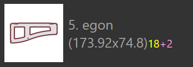

Nesting Modes
The nesting engine in TecZone Laser can compose layouts from a nesting job efficiently. You can also take any of the nested layouts (or even start with a blank sheet) and interactively add parts to it, move and rotate parts.
Automatic Nesting
Initially, you add sheets and parts into a nesting job. When you then switch to the Layouts tab, a nest is performed automatically. Subsequently, you may change the list of parts, or alter some settings and then we have some options to re-nest the parts with varying settings.
Adding more parts to a sheet
Let’s assume you have added a few additional parts to the nesting job, and they have not yet been nested. To use the nesting engine to place these parts on the sheet, first select the layout[1] you want to use (often this is the last sheet, which is likely to be only partially filled). Then, click on the Nest icon from the toolbar on the left, and then select Pack remaining sheet area automatically. [2]

The parts that remain to be nested are placed on the remaining area of the sheet. This option does not alter any of the parts that have already been placed on the sheet, and it is sometimes used to partially nest a sheet manually, and then ask the nesting engine to finish the rest of the nest. The image below shows the newly added parts with a yellow tint, and you can see the older parts have not been moved:

Rearrange - remainder sheet
If you do not need to maintain the positions of the older parts, then you can get better results by asking the nesting engine to rearrange the entire sheet. Choose the Rearrange to create a remainder sheet, and TecZone Laser will renest all the parts on the sheet, trying to get a clean rectangular remainder sheet on the right, which can be used as raw material for a future nest.

It can be seen that the sheet above has the same parts as before, but packed tighter, enabling a remainder sheet to be sliced off for use.
Rearrange - use full sheet
If the remainder sheet is too small to be useful, it is useful to ask the nesting engine to repack the sheet a bit more loosely, still getting all the parts on the sheet, but increasing the spacing between parts to use up the entire area of the sheet. That can be done by choosing Rearrange to use full sheet from the menu:

Manual Nesting
Open a layout for editing either from the Layouts tab of the Job Panel, or by opening a .fxlyt file that you have saved earlier.
Adding parts
You can add parts to the layout by clicking on the Add button on the left toolbar. A list of all the parts in the nesting job is displayed:

Clicking on a part from the list adds it to the sheet (the nesting engine is used to try and find an optimum position for the part, but you can change that later). The part legends use different colors for different meanings as listed below:
|
12 parts nested (required quantity) |
|
2 less parts nested than are required |
 |
18 parts required, 20 nested (+2) |
|
Required quantity of 24 parts nested |


As you move the mouse over parts in the part list, TecZone Laser immediately computes a good placement position for the part and tentatively inserts it into the sheet in blue color, so you can judge if it would be a good fit. You can therefore place a number of parts quickly on the sheet by just moving the mouse over them and clicking.

| Once parts are placed on the sheet, they can be the moved, rotated or repeated using the Placement Panel. |